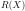
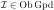
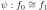
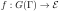

An interpretation of dependent type theory in a model category of locally cartesian closed categories
Abstract
Locally cartesian closed (lcc) categories are natural categorical models of extensional dependent type theory.
This paper introduces the “gros” semantics in the category of lcc categories:
Instead of constructing an interpretation in a given individual lcc category, we show that also the category of all lcc categories can be endowed with the structure of a model of dependent type theory.
The original interpretation in an individual lcc category can then be recovered by slicing.
As in the original interpretation, we face the issue of coherence:
Categorical structure is usually preserved by functors only up to isomorphism, whereas syntactic substitution commutes strictly with all type theoretic structure.
Our solution involves a suitable presentation of the higher category of lcc categories as model category.
To that end, we construct a model category of lcc sketches, from which we obtain by the formalism of algebraically (co)fibrant objects model categories of strict lcc categories and then algebraically cofibrant strict lcc categories.
The latter is our model of dependent type theory.
1 Introduction
Locally cartesian closed (lcc) categories are natural categorical models of extensional dependent type theory [
19]:
Given an lcc category

, one interprets
A context extension is interpreted as the domain of .
Application of a substitution to a type is interpreted as pullback
and similarly for terms .
By definition, the pullback functors in lcc categories
have both left and right adjoints , and these are used for interpreting -types and -types.
For example, the interpretation of a pair of types and is a composable pair of morphisms , and then the dependent product type is interpreted as , which is an object of , i.e. a morphism into .
However, there is a slight mismatch:
Syntactic substitution is functorial and commutes strictly with type formers, whereas pullback is generally only pseudo-functorial and hence preserves universal objects only up to isomorphism.
Here functoriality of substitution means that if one has a sequence of substitutions, then we have equalities and , i.e. substituting in succession yields the same result as substituting with the composition.
For pullback functors, however, we are only guaranteed a natural isomorphism .
Similarly, in type theory we have (where denotes the weakening of along ), whereas for pullback functors there merely exist isomorphisms .
In response to these problems, several notions of models with strict pullback operations were introduced, e.g. categories with families (cwfs) [
11], and coherence techniques were developed to “strictify” weak models such as lcc categories to obtain models with well-behaved substitution [
9,
13,
15].
Thus to interpret dependent type theory in some lcc category
, one first constructs an equivalence such that can be endowed with the structure of a strict model of type theory (say, cwf structure), and then interprets type theory in .
In this paper we construct cwf structure on the category of all lcc categories instead of cwf structure on some specific lcc category.
First note that the classical interpretation of type theory in an lcc category
is essentially an interpretation in the slice categories of
:
-
Objects can be identified with slice categories .
-
Morphisms can be identified with lcc functors which commute with the pullback functors and .
-
Morphisms with codomain can be identified with the objects of the slice categories .
-
Sections can be identified with morphisms with the terminal object in the slice category .
Removing all reference to the base category
, we may now attempt to interpret
-
each context as a separate lcc category;
-
a substitution from to as an lcc functor ;
-
types as objects ; and
-
terms as morphisms from a terminal object to .
In the original interpretation, substitution in types and terms is defined by the pullback functor along a morphism .
In our new interpretation, is already an lcc functor, which we simply apply to objects and morphisms of lcc categories.
The idea that different contexts should be understood as different categories is by no means novel, and indeed widespread among researchers of geometric logic; see e.g. [
20, section 4.5].
Not surprisingly, some of the ideas in this paper have independently already been explored, in more explicit form, in [
21] for geometric logic.
To my knowledge, however, an interpretation of type theory along those lines, especially one with strict substitution, has never been spelled out explicitly, and the present paper is an attempt at filling this gap.
Like Seely's original interpretation, the naive interpretation in the category of lcc categories outlined above suffers from coherence issues:
Lcc functors preserve lcc structure up to isomorphism, but not necessarily up to equality, and the latter would be required for a model of type theory.
Even worse, our interpretation of contexts as lcc categories does not admit well-behaved context extensions.
Recall that for a context and a type in a cwf, a context extension consists of a context morphism and a term such that for every morphism and term there is a unique morphism over such that .
In our case a context morphism is an lcc functor in the opposite direction.
Thus a context extension of an lcc category by would consist of an lcc functor and a morphism in , and would have to be suitably initial.
At first sight it might seem that the slice category is a good candidate:
Pullback along the unique map defines an lcc functor .
The terminal object of is the identity on , and applying to itself yields the first projection .
Thus the diagonal is a term .
The problem is that, while this data is indeed universal, it is only so in the bicategorical sense (see Lemma
29):
Given an lcc functor and term , we obtain an lcc functor
however, commutes with and only up to natural isomorphism, the equation holds only up to this natural isomorphism, and is unique only up to unique isomorphism.
The issue with context extensions can be understood from the perspective of comprehension categories, an alternative notion of model of type theory, as follows.
Our cwf is constructed on the opposite of , the category of lcc categories and lcc functors.
The corresponding comprehension category should thus consist of a Grothendieck fibration and a functor to the arrow category of such that
commutes and is a pullback square for each cartesian morphism in .
The data of a Grothendieck fibration as above is equivalent to a (covariant) functor via the Grothendieck construction, and here we simply take the forgetful functor.
Thus the objects of are pairs such that is an lcc category and , and a morphism

in is a pair of lcc functor and morphism in .
The functor should assign to objects of the projection of the corresponding context extension, hence we define

as the pullback functor to the slice category.
The cartesian morphisms of are those with invertible vertical components , so they are given up to isomorphism by pairs of the form .
The images of such morphisms under are squares
(1)
 (1)
(1)
in .
For to be a comprehension category, they would have to be pushout squares, but in fact they are bipushout squares:
They satisfy the universal property of pushouts up to unique isomorphism, but not up to equality.
If does not preserve pullback squares up to strict equality, then the square
(1) commutes only up to isomorphism, not equality.
Thus is not even a functor but a bifunctor.
Usually when one considers coherence problems for type theory, the problem lies in the fibration , which is often not strict, and it suffices to change the total category while leaving the base unaltered.
Our fibration is already strict, but it does not support substitution stable type constructors.
Here the main problem is the base category, however:
The required pullback diagrams exist only in the bicategorical sense.
Thus the usual constructions [
13,
15] are not applicable.
The goal must thus be to find a category that is (bi)equivalent to in which we can replace the bipushout squares
(1) by 1-categorical pushouts.
Our tool of choice to that end will be
model category theory (see e.g. [
12]).
Model categories are presentations of higher categories as ordinary 1-categories with additional structure.
Crucially, model categories allow the computation of higher (co)limits as ordinary 1-categorical (co)limits under suitable hypotheses.
The underlying 1-category of the model category presenting a higher category is not unique, and some presentations are more suitable for our purposes than others.
We explore three Quillen equivalent model categories, all of which encode the same higher category of lcc categories, and show that the third one indeed admits the structure of a model of dependent type theory.
Because of its central role in the paper, the reader is thus expected to be familiar with some notions of model category theory.
We make extensive use of the notion of algebraically (co)fibrant object in a model category [
18,
7], but the relevant results are explained where necessary and can be taken as black boxes for the purpose of this paper.
Because of the condition on enrichment in Theorem
21, all model categories considered here are proved to be model -categories, that is, model categories enriched over the category of groupoids with their canonical model structure.
See [
3] for background on enriched model category theory, [
4] for the canonical model category of groupoids, and [
14] for the closely related model -categories.
While it is more common to work with the more general simplicially enriched model categories, the fact that the higher category of lcc categories is 2-truncated affords us to work with simpler groupoid enrichments instead.
In Section
2 we construct the model category of
lcc sketches, a left Bousfield localization of an instance of Isaev's model category structure on marked objects [
2].
Lcc sketches are to lcc categories as finite limit sketches are to finite limit categories.
Thus lcc sketches are categories with some diagrams marked as supposed to correspond to a universal object of lcc categories, but marked diagrams do not have to actually satisfy the universal property.
The model category structure is set up such that every lcc sketch generates an lcc category via fibrant replacement, and lcc sketches are equivalent if and only if they generate equivalent lcc categories.
In Section
3 we define the model category

of
strict lcc categories.
Strict lcc categories are the algebraically fibrant objects of , that is, they are objects of
equipped with canonical lifts against trivial cofibrations witnessing their fibrancy in .
Such canonical lifts correspond to canonical choices of universal objects in lcc categories, and the morphisms in
preserve these canonical choices not only up to isomorphism but up to equality.
Section
4 finally establishes the model of type theory in the opposite of , the model category of
algebraically cofibrant objects in
.
The objects of are strict lcc categories such that every (possibly non-strict) lcc functor has a canonical strict isomorph.
This additional structure is crucial to reconcile the context extension operation, which is given by freely adjoining a morphism to a strict lcc category, with taking slice categories.
In Section
5 we show that the cwf structure on can be used to rectify Seely's original interpretation in a given lcc category
.
This is done by choosing an equivalent lcc category with , and then inherits cwf structure from the core of the slice cwf .
Acknowledgements.
This paper benefited significantly from input by several members of the research community.
I would like to thank the organizers of the TYPES workshop 2019 and the HoTT conference 2019 for giving me the opportunity to present preliminary versions of the material in this paper.
Conversations with Emily Riehl, Karol Szumiło and David White made me aware that the constructions in this paper can be phrased in terms of model category theory.
Daniel Gratzer pointed out to me the biuniversal property of slice categories.
Valery Isaev explained to me some aspects of the model category structure on marked objects.
I would like to thank my advisor Bas Spitters for his advice on this paper, which is part of my PhD research.
This work was supported by the Air Force Office and Scientific Research project “Homotopy Type Theory and Probabilistic Computation”, grant number 12595060.
2 Lcc sketches
This section is concerned with the model category of lcc sketches.
is constructed as the left Bousfield localization of a model category of lcc-marked objects, an instance of Isaev's model category structure on marked objects.
Definition 1 ([2] Definition 2.1).
Let
be a category and let be a diagram in
.
An
(-)marked object is given by an object in
and a subfunctor of .
A map of the form is
marked if .
A morphism of -marked objects is a marking-preserving morphism of underlying objects in
, i.e. a morphism such that the image of under postcomposition by is contained in .
The category of -marked objects is denoted by .
The forgetful functor has a left and right adjoint:
Its left adjoint is given by equipping an object of
with the minimal marking , while the right adjoint equips objects with their maximal marking .
In our application, is the category of (sufficiently small) categories, and contains diagrams corresponding to the shapes (e.g. a squares for pullbacks) of lcc structure.
Definition 2.
The subcategory of
lcc shapes is given as follows:
Its objects are the three diagrams , and .
is given by the category with a single object and no nontrivial morphisms; it corresponds to terminal objects.
is the free-standing non-commutative square
and corresponds to pullback squares.
is the free-standing non-commutative diagram
and corresponds to dependent products and their evaluation maps .
The only nontrivial functor in is the inclusion of into as indicated by the variable names.
It corresponds to the requirement that the domain of the evaluation map of dependent products must be a suitable pullback.
We obtain the category of lcc-marked categories.
Now suppose that is a model category.
Let be the quotient functor to the homotopy category.
A marking of some induces a canonical marking on by taking to be the image of under

.
Thus a morphism in is marked if and only if it has a preimage under
which is marked.
Theorem 3 ([2] Theorem 3.3).
Let be a combinatorial model category and let be a diagram in such that every object in the image of is cofibrant.
Then the following defines the structure of a combinatorial model category on :
A marked object is fibrant if and only if is fibrant in and the markings of are stable under homotopy; that is, if are homotopic maps in and is marked, then is marked.
The adjunctions and

are Quillen adjunctions.
Remark 4.
The description of weak equivalences in Theorem
3 does not appear as stated in [
2], but follows easily from results therein.
Let be a fibrant replacement functor.
By [
2, lemma 2.5], a map is a weak equivalence in if and only if is a weak equivalence in and for every diagram (of solid arrows)
(2)
(2)
in which the outer square commutes up to homotopy and is marked, there exists a marked map as indicated such that .
( is not required to commute with and .)
Now assume that satisfies this condition and let us prove that is an isomorphism of induced marked objects in the homotopy category.
is an isomorphism in , so it suffices to show that preserves markings.
By definition, every marked morphism of is of the form for some marked .
Because is cofibrant and  is fibrant, the map has a preimage under
.
As is cofibrant,

is fibrant and , there is a homotopy .
By assumption, there exists a marked map such that , thus is marked.
To prove the other direction of the equivalence, assume that is an isomorphism of marked objects and let be as in diagram
(2).
is marked, hence has a preimage under
which is marked.
We have because postcomposition of both sides with the isomorphism gives equal results.
is cofibrant and is fibrant, thus .
Lemma 5.
Let and be as in Theorem
3.
-
If is a left proper model category, then is a left proper model category.
-
If is a model -category, then admits the structure of a model -category such that and
lift to Quillen -adjunctions.
Proof.
1.
Let
be a pushout square in such that is a weak equivalence.
is left proper, so is invertible as a map in .
A map is marked if and only if it factors via a marked map or via a marked map .
In the first case,
which is marked because is a weak equivalence.
Otherwise
which is also marked.
We have shown that is an isomorphism of marked objects in , thus is a weak equivalence.
2.
Let and be marked objects.
We define the mapping groupoid as the full subgroupoid of of marking preserving maps.
is complete and cocomplete as a 1-category.
Thus if we construct tensors and powers for all and it follows that is also complete and cocomplete as a -category.
The underlying object of powers and copowers is constructed in , i.e. and .
A map is marked if and only if the composite
is marked for every (which we identify with a map ).
Similarly, a map is marked if and only if it factors as
for some object in and marked .
It follows by [
1, Theorem 4.85] from the preservation of tensors and powers by that the 1-categorical adjunctions and extend to -adjunctions.
It remains to show that the tensoring is a Quillen bifunctor.
For this we need to prove that if is a cofibration of groupoids and is a cofibration of marked objects, then their pushout-product
is a cofibration, and that it is a weak equivalence if either or is furthermore a weak equivalence.
The first part follows directly from the same property for the -enrichment of and the fact that preserves tensors and pushouts, and reflects cofibrations.
In the second part we have in both cases that is a weak equivalence in .
Thus we only need to show that reflects a given marked morphism in .
It follows from the construction of that for any such there exists such that for some marked map .
Assume first that is a trivial cofibration, i.e. an equivalence of groupoids that is injective on objects.
Then there exists such that and are isomorphic objects of .
is (left) homotopic to

, which factors via the marked map .
It follows that reflects marked morphisms.
Now assume that is a trivial cofibration.
Then reflects marked maps, i.e. there exists a marked map such that .
Thus the equivalence class of in is marked and mapped to under postcomposition by .
In the semantics of logic, one usually defines the notion of model of a logical theory in two steps:
First a notion of structure is defined that interprets the theory's signature, i.e. the function and relation symbols that occur in its axioms.
Then one defines what it means for such a structure to satisfy a formula over the signature, and a model is a structure of the theory's signature which satisfies the theory's axioms.
For very well-behaved logics such as Lawvere theories, there is a method of freely turning structures into models of the theory, so that the category of models is a reflective subcategory of the category of structures.
By analogy, lcc-marked categories correspond to the structures of the signature of lcc categories.
The model structure of ensures that markings respect the homotopy theory of , in that the choice of marking is only relevant up to isomorphism of diagrams.
However, the model structure does not encode the universal property that marked diagrams are ultimately supposed to satisfy.
To obtain the analogue of the category of models for a logical theory, we now define a reflective subcategory of .
The technical tool to accomplish this is a left Bousfield localization at a set of morphisms in .
corresponds to the set of axioms of a logical theory.
We thus need to define in such a way that an lcc-marked category is lcc if and only if it has the right lifting property against the morphisms in such that lifts are determined uniquely up to unique isomorphism.
is a combinatorial and left proper model -category with mapping groupoids given by sets of functors and their natural isomorphisms.
Thus has the structure of a combinatorial and left proper model -category by Lemma
5.
It follows that the left Bousfield localization at any (small) set of maps exists by [
12, Theorem 4.1.1].
Definition 6.
The model category of
lcc sketches is the left Bousfield localization of the model category of -marked categories at the following morphisms.
Proposition 7.
The model category is a model for the -category of lcc categories and lcc functors:
-
An object is fibrant if and only if its underlying category is lcc and
-
a map is marked if and only if its image is a terminal object;
-
a map is marked if and only if its image is a pullback square; and
-
a map is marked if and only if its image is (isomorphic to) the diagram of the evaluation map of a dependent product.
-
The homotopy category of is equivalent to the category of lcc categories and isomorphism classes of lcc functors.
-
The homotopy function complexes of fibrant lcc sketches are given by the groupoids of lcc functors and their natural isomorphisms.
Proof.
Homotopy function complexes of maps from cofibrant to fibrant objects in a model -category can be computed as nerves of the groupoid enrichment.
Thus
2 and
3 follow from
1 and Lemma
5.
By [
12, Theorem 4.1.1], the fibrant objects of the left Bousfield localization at the set of morphisms from Definition
6 are precisely the fibrant lcc-marked categories
which are -local for all .
The verification of the equivalence asserted in
1 can thus be split up into three parts corresponding to terminal objects, pullback squares and dependent products.
As the three proofs are very similar, we give only the proof for pullbacks.
For this we must show that if
is a -marked category, then marked maps are stable under isomorphisms and
is -local for if and only if the underlying category has all pullbacks and maps are marked if and only if their images are pullbacks.
Let be a model -category.
The homotopy function complexes of maps from cofibrant to fibrant objects in can be computed as nerves of mapping groupoids.
The nerve functor preserves and reflects trivial fibrations.
Thus if is a morphism of cofibrant objects , then a fibrant object is -local if and only if
is a trivial fibration of groupoids, i.e. an equivalence that is surjective on objects.
Unfolding this we obtain the following characterization of -locality for a fibrant -marked category:
-
is -local if and only if all -marked squares commute.
-
is -local if and only if every cospan can be completed to a -marked square, and isomorphisms of cospans can be lifted uniquely to isomorphisms of -marked squares completing them.
-
is -local if and only if every commutative square completing the lower cospan of a -marked square factors via the -marked square, and every factorization is compatible with natural isomorphisms of diagrams.
By compatibility with the identity isomorphism, the factorization is unique.
If these conditions are satisfied, then every cospan in
can be completed to a pullback square which is -marked, and -marked squares are pullbacks.
By fibrancy of
, it follows that precisely the pullback squares are -marked.
Conversely, if we take as -marked squares the pullbacks in a category
with all pullbacks, then -marked squares will be stable under isomorphism, and, by the characterization above,
will be -local for all .
3 Strict lcc categories
A naive interpretation of type theory in the fibrant objects of as outlined in the introduction suffers from very similar issues as Seely's original version:
Type theoretic structure is preserved up to equality by substitution, but lcc functors preserve the corresponding objects with universal properties only up to isomorphism.
In this section, we explore an alternative model categorical presentation of the higher category of lcc categories.
Our goal is to rectify the deficiency that lcc functors do not preserve lcc structure up to equality.
Indeed, lcc structure on fibrant lcc sketches is induced by a right lifting property, so there is no preferred choice of lcc structure on fibrant lcc sketches.
We can thus not even state the required preservation up to equality.
To be able to speak of distinguished choice of lcc structure, we employ the following technical device.
Definition 8 ([18]).
Let be a combinatorial model category and let be a set of trivial cofibrations such that objects with the right lifting property against are fibrant.
An
algebraically fibrant object of (with respect to ) consists of an object equipped with a choice of lifts against all morphisms .
Thus comes with maps for all in and in such that
commutes.
A morphism of algebraically fibrant objects is a morphism in that preserves the choices of lifts, in the sense that for all in and .
The category of algebraically fibrant objects is denoted by , and the evident forgetful functor by .
Proposition 9.
Denote by  the free-standing isomorphism with objects and and let .
Let be the lcc-marked object given by with the only marking for and

, the markings for , and denote by the obvious inclusion.
Then is a trivial cofibration in , and an object of is fibrant if and only if it has the right lifting property against for all .
Proof.
The maps are injective on objects and hence cofibrations, and they reflect markings up to isomorphism, hence are also weak equivalences.
A map corresponds to an isomorphism of maps with marked, and can be lifted to if and only if is also marked.
Thus
has the right lifting property against the if and only if its markings are stable under isomorphism, which is the case if and only if
is fibrant.
Proposition 10.
An object of is fibrant if and only if it has the right lifting property against all of the following morphisms, all of which are trivial cofibrations in :
-
The maps of Proposition
9.
-
The morphisms of Definition
6.
-
The maps , where is one of or .
Proof.
All three types of maps are injective on objects and hence cofibrations in and .
By Proposition
9, the maps are trivial cofibrations of lcc-marked categories and hence also trivial cofibrations in .
By Proposition
7, the fibrant objects of are precisely the lcc categories.
If
is an lcc category and is a morphism of type
2 or
3, then
is an equivalence of groupoids and hence induces a bijection of isomorphism classes.
It follows by the Yoneda lemma that is an isomorphism in , so is a weak equivalence in .
On the other hand, let
be a fibrant lcc-marked category with the right lifting property against morphisms of type
2 and the morphisms of type
3.
The right lifting property against and implies that -marked diagrams commute, that every cospan can be completed to a -marked square, and that every square over a cospan factors via every -marked square over the cospan.
Uniqueness of factorizations follows from the right lifting property against the map of type
3 corresponding to pullbacks.
Thus
has pullbacks, and the argument for terminal objects and dependent products is similar.
Definition 11.
A
strict lcc category is an algebraically fibrant object of with respect to the set consisting of the morphisms of types
1 --
3 of Proposition
10.
The category of strict lcc categories is denoted by
.
Remark 12.
The objects in the image of the forgetful functor are the fibrant lcc sketches, i.e. lcc categories.
To endow an lcc category with the structure of a strict lcc category, we need to choose canonical lifts against the morphisms .
Because the lifts against all other morphisms are uniquely determined, only the choices for and are relevant for this.
Thus a strict lcc category is an lcc category with assigned terminal object, pullback squares and dependent products (including the evaluation maps of dependent products).
A strict lcc functor is then an lcc functor that preserves these canonical choices of universal objects not just up to isomorphism but up to equality.
The slice category over an object of an lcc category
is lcc again.
A morphism in
induces by pullback an lcc functor , and there exist functors and adjunctions .
These data depend on choices of pullback squares and dependent products, and hence they are preserved by lcc functors only up to isomorphism.
For strict lcc categories , however, these functors can be constructed using canonical lcc structure, i.e. using the lifts for various , and this choice is preserved by strict lcc functors.
Proposition 13.
Let be a strict lcc category, and let .
Then there is a strict lcc category whose underlying category is the slice .
If is a morphism in , then there is a canonical choice of pullback functor which is lcc (but not necessarily strict) and canonical left and right adjoints
These data are natural in .
Thus if is strict lcc, then the evident functor is strict lcc, and the following squares in respectively commute:
(Here application of and has been omitted; the left square is valued in , and the two right squares are valued in .)
and commute with taking transposes along the involved adjunctions.
Proof.
We take as canonical terminal object of the identity morphism on .
Canonical pullbacks in are computed as canonical pullbacks of the underlying diagram in , and similarly for dependent products.
The canonical pullback and dependent product functors are defined using canonical pullbacks and dependent products, and dependent sum functors are computed by composition with .
Units and counits of the adjunctions are given by the evaluation maps of canonical dependent products and the projections of canonical pullbacks.
Because these data are defined in terms of canonical lcc structure on , they are preserved by strict lcc functors.
The context morphisms in our categories with families (cwfs) [
11] will usually be defined as functors of categories in the opposite directions.
Cwfs are categories equipped with contravariant functors to , the category of families of sets.
To avoid having to dualize twice, we thus introduce the following notion.
Definition 14.
A
covariant cwf is a category
equipped with a (covariant) functor .
The intuition for a context morphism in a cwf is an assignment of terms in to the variables occurring in .
Dually, a morphism in a covariant cwf should thus be thought of as a mapping of the variables in to terms in context , or more conceptually as an interpretation of the mathematics internal to into the mathematics internal to .
Apart from our use of covariant cwfs, we adhere to standard terminology with the obvious dualization.
For example, an empty context in a covariant cwf is an initial (instead of terminal) object in the underlying category.
To distinguish type and term formers in (covariant) cwfs from the corresponding categorical structure, the type theoretic notions are typeset in bold where confusion is possible.
Thus denotes a dependent product type whereas denotes application of a dependent product functor

to an object .
Definition 15.
The covariant cwf structure on
is given by and , where denotes the canonical terminal object of .
Proposition 16.
The covariant cwf
has an empty context and context extensions, and it supports finite product and extensional equality types.
Proof.
It follows from Theorem
18 below that
is cocomplete and that has a left adjoint .
In particular, there exists an initial strict lcc category, i.e. an empty context in
.
Let .
The context extension is constructed as pushout
where

denotes a minimally marked lcc sketch with two objects and

is the minimally marked free-standing arrow.
The vertical morphism on the left is induced by mapping to (the canonical terminal object of ) and to , and the top morphism is the evident inclusion.
The variable is given by the image of in .
Unit types are given by the canonical terminal objects of strict lcc categories .
Binary product types are given by canonical pullbacks over the canonical terminal object in .
Finally, equality types are constructed as canonical pullbacks
in , i.e. as equalizers of and .
Because these type constructors (and evident term formers) are defined from canonical lcc structure, they are stable under substitution.
Remark 17.
Unfortunately,
does not support dependent product or dependent sum types in a similarly obvious way.
The introduction rule for dependent types is
To interpret it, we would like to apply the dependent product functor to .
We thus need a functor to obtain an object of the slice category, and the construction of such a functor appears to be not generally possible.
Note that the most natural strategy for constructing this functor using the universal property of does not work:
For this we would note that the pullback functor is lcc, and that the diagonal is a morphism in , and then try to obtain .
The flaw in this argument is that , while lcc, is not strict, and the universal property of only applies to strict lcc functors.
A solution to this problem is presented in Section
4.
We conclude the section with a justification for why we have not gone astray so far:
The initial claim was that our interpretation of type theory would be valued in the category of lcc categories, but
is neither 1-categorically nor bicategorically equivalent to the category of fibrant lcc sketches.
Indeed, not every non-strict lcc functor of strict lcc categories is isomorphic to a strict lcc functor.
Nevertheless,
has model category structure that presents the same higher category of lcc categories by the following theorem:
Theorem 18 ([18] Proposition 2.4, [6] Theorem 19).
Let be a combinatorial model category, and let be a set of trivial cofibrations such that objects with the right lifting property against are fibrant.
Then is monadic with left adjoint , and is a locally presentable category.
The model structure of can be transferred along the adjunction to , endowing with the structure of a combinatorial model category.
is a Quillen equivalence, and the unit is a trivial cofibration for all .
Theorem
18 appears in [
18] with the additional assumption that all cofibrations in are monomorphisms.
This assumption is lifted in [
6], but there is a set of generating trivial cofibrations, which is a slightly stronger condition than the one stated in the theorem.
However, the proof in [
6] works without change in the more general setting.
That the model structure of is obtained by transfer from that of means that reflects fibrations and weak equivalences.
Lemma 19.
Let and be as in Theorem
18, and suppose furthermore that is a model -category.
Then has the structure of a model -category, and the adjunction lifts to a Quillen -adjunction.
Proof.
Let and be algebraically fibrant objects.
We define the mapping groupoid

to be the full subgroupoid of whose objects are the maps of algebraically fibrant objects .
Because is generated under colimits by the free-standing isomorphism , it will follow from the existence of powers that is complete as a -category.
As we will later show that is a right adjoint, the powers in must be constructed such that they commute with , i.e. .
Let be in and let .
The canonical lift is constructed as follows:
corresponds to a map , i.e. an isomorpism of maps

.
Its source and target are morphisms , for which we obtain canonical lifts using the canonical lifts of .
Because is fibrant and is a trivial cofibration, the map is a trivial fibration and in particular an equivalence.
It follows that can be lifted uniquely to an isomorphism of with , and we take as this isomorphism's transpose.
From uniqueness of the lift defining , it follows that a map preserves canonical lifts if and only if the two maps
given by evaluation at the endpoints of the isomorphism preserve canonical lifts.
Thus the canonical isomorphism
restricts to an isomorphism
It follows by [
1, theorem 4.85] and the preservation of powers by that the 1-categorical adjunction is groupoid enriched.
It is proved in [
18] that , when considered as a functor of ordinary categories, is monadic using Beck's monadicity theorem.
The only additional assumption for the enriched version of Beck's theorem [
10, theorem II.2.1] we have to check is that the coequalizer of a -split pair of morphisms as constructed in [
18] is a colimit also in the enriched sense.
This follows immediately from the fact that is locally full and faithful.
is -monadic and accessible, so is -cocomplete by [
5, theorem 3.8].
It remains to show that is groupoid enriched also in the model categorical sense.
For this it suffices to note that preserves (weighted) limits and that preserves and reflects fibrations and weak equivalences, so that the map
induced by a cofibration of groupoids and a fibration

in is a fibration and a weak equivalence if either or is a weak equivalence.
Remark 20.
[
14] defines model category structure on , the category of strict algebras and their strict morphisms for a 2-monad on a model -category.
If we choose for the monad on assigning to every category the free lcc category generated by it, then is -equivalent to
, so it is natural ask whether their model category structures agree.
The model category structure on is defined by transfer from , i.e. such that the forgetful functor

reflects fibrations and weak equivalences.
The same is true for , and this functor is valued in the fibrant objects of .
The restriction of the functor to fibrant objects reflects weak equivalences and trivial fibrations because equivalences of categories preserve and reflect universal objects that exist in domain and codomain.
Thus
and have the same sets of weak equivalences and trivial fibrations, hence their model category structures coincide.
4 Algebraically cofibrant strict lcc categories
As noted in Remark
17, to interpret dependent sum and dependent product types in
, we would need to relate context extensions to slice categories .
In this section we discuss how this problem can be circumvented by considering yet another Quillen equivalent model category: The category of algebraically
cofibrant strict lcc categories.
The slice category of an lcc category
is bifreely generated by (any choice of) the pullback functor and the diagonal , viewed as a morphism in :
Given a pair of lcc functor and morphism in , there is an lcc functor that commutes with and up to a natural isomorphism under which corresponds to , and every other lcc functor with this property is uniquely isomorphic to .
Phrased in terms of model category theory, this biuniversal property amounts to asserting that the square
is a homotopy pushout square in .
Here denotes the discrete category with two objects and no markings, from which is obtained by adjoining a single morphism .
The left vertical map maps to some terminal object and to , and the right vertical map maps to the diagonal in .
Recall from Proposition
16 that a context extension in
is defined by the 1-categorical pushout square
(3)
(3)
Because is a Quillen equivalence, we should thus expect to find weak equivalences relating to if the pushout
(3) is also a
homotopy pushout.
By [
16, Proposition A.2.4.4], this is the case if , and are cofibrant, and the map is a cofibration.
The cofibrations of are the maps which are injective on objects.
It follows that and are cofibrant lcc sketches, and that the inclusion of the former into the latter is a cofibration.
is a left Quillen functor and hence preserves cofibrations.
Thus the pushout
(3) is a homotopy pushout if is cofibrant.
Note that components of the counit are cofibrant replacements:
Every lcc sketch is cofibrant in , every strict lcc category is fibrant in
, and is a Quillen equivalence.
It follows that a strict lcc category is cofibrant if and only if the counit is a retraction, say with section .
And indeed, this section can be used to strictify the pullback functor.
We have , which induces a strict lcc functor .
Now let
which is naturally isomorphic to .
Adjusting the domain and codomain of the diagonal suitably to match , we thus obtain the desired comparison functor .
At first we might thus attempt to restrict the category of contexts to the cofibrant strict lcc categories , for which sections exist.
Indeed, cofibrant objects are stable under pushouts along cofibrations, so the context extension will be cofibrant again if is cofibrant.
The dependent product type would be defined by application of
to .
Unfortunately, the definition of the comparison functor required a
choice of section , and this choice will not generally be compatible with strict lcc functors .
The dependent products defined as above will thus not be stable under substitution.
To solve this issue, we make the section part of the structure.
Similarly to how strict lcc categories have associated structure corresponding to their fibrancy in lcc, we make the section witnessing the cofibrancy of strict lcc categories part of the data, and require morphisms to preserve it.
We thus consider algebraically cofibrant objects, which, dually to algebraically fibrant objects, are defined as coalgebras for a cofibrant replacement comonad.
As in the case of algebraically fibrant objects, we are justified in doing so because we obtain an equivalent model category:
Theorem 21 ([7] Lemmas 1.2 and 1.3, Theorems 1.4 and 2.5).
Let be a combinatorial and model -category.
Then there are arbitrarily large cardinals such that
-
is locally -presentable;
-
is cofibrantly generated with a set of generating cofibrations for which domains and codomains are -presentable objects;
-
an object is -presentable if and only if the functor , given by the groupoid enrichment of , preserves -filtered colimits.
Let be any such cardinal.
Then there is a cofibrant replacement -comonad that preserves -filtered colimits.
Let be any such comonad and denote its category of coalgebras by .
Then the forgetful functor has a left adjoint .
is a complete and cocomplete -category, and is a -adjunction.
The model category structure of can be transferred along , making a model -category.
is a Quillen equivalence.
For , the first infinite cardinal satisfies the three conditions of Theorem
21, and is a suitable cofibrant replacement comonad.
Definition 22.
The covariant cwf structure on is defined as the composite
in terms of the covariant cwf structure on
.
We denote by the unit and by

the counit of the adjunction .
Lemma 23.
Let be an -coalgebra.
Then there is a canonical natural isomorphism of lcc functors which is compatible with morphisms of -coalgebras.
Proof.
It suffices to construct a natural isomorphism
of lcc endofunctors on for every strict lcc category , because then
for every coalgebra .
is a trivial cofibration, so the map
(4)
(4)
is a trivial fibration of groupoids.
By one of the triangle identities of units and counits, we have .
Thus both and are sent to under the surjective equivalence
(4), and so we can lift the identity natural isomorphism on to an isomorphism as above.
Since the lift is unique, it is preserved under strict lcc functors in .
Proposition 24.
The covariant cwf has an empty context and context extensions, and the forgetful functor preserves both.
Proof.
The model category has an initial object, i.e. an empty context.
Its underlying strict lcc category is the initial strict lcc category, and the structure map is the unique strict lcc functor with this signature.
Now let be an -coalgebra and be a type.
We must construct coalgebra structure on the context extension in
such that
commutes, and show that the strict lcc functor induced by a coalgebra morphism and a term is a coalgebra morphism.
Let be the variable term of the context extension of by .
Then is a morphism
in .
is a terminal object and hence uniquely isomorphic to the canonical terminal object of , and is isomorphic to via a component of , where is the natural isomorphism constructed in Lemma
23.
We thus obtain a term

and can define
by the universal property of .
is compatible with and by construction.
Now let be a coalgebra morphism and let .
We need to show that
commutes.
This follows from the universal property of :
The two maps agree after precomposing because by assumption is a coalgebra morphism, and they both map to the term obtained from similarly to from because the isomorphism constructed in Lemma
23 is compatible with coalgebra morphisms.
For
a -category and , we denote by the higher coslice -category of objects under .
Its objects are morphisms out of , its morphisms are triangles
in
which commute up to specified isomorphism , and its 2-cells are 2-cells  in
such that .
Definition 25.
Let
be an lcc category and .
A
weak context extension of
by consists of an lcc functor and a morphism with a terminal object in such that the following biuniversal property holds:
For every lcc category , lcc functor and morphism in with terminal, the full subgroupoid of given by pairs of lcc functor and natural isomorphism such that the square
in commutes is contractible (i.e. equivalent to the terminal groupoid).
Remark 26.
Note that the definition entails that mapping groupoids of lcc functors under
with a weak context extension are equivalent to discrete groupoids.
Lcc functors under
are (necessarily uniquely) isomorphic under
if and only if they correspond to the same morphism in .
Lemma 27.
Let be an -coalgebra and let be a strict lcc category.
Then the full and faithful inclusion of groupoids
(5)
(5)
admits a canonical retraction .
There is a natural isomorphism , exhibiting the retract
(5) as an equivalence of groupoids.
The retraction and natural isomorphism

is -natural in and .
Proof.
Let .
The transpose of is a strict lcc functor such that .
We set and for as in Lemma
23.
If already arises from a strict lcc functor , then and hence .
The action of the retraction on natural isomorphisms is defined analogously from the -enrichment of .
Lemma 28.
Let be an -coalgebra.
Then and form a weak context extension of by .
Proof.
Let  be an lcc functor and be a morphism with terminal domain in .
Let be a strict lcc category such that .
Then by Lemma
27 there is an isomorphism for some strict lcc functor .
Set , where

is the unique morphism in

such that
commutes.
(Both vertical arrows are isomorphisms.)
Now with we have .
Let and be any other lcc functor over such that
commutes.
We need to show that and are uniquely isomorphic under .
Lemma
27 reduces this to the unique existence of an extension of the isomorphism defined as composite
to an isomorphism under .
This follows from the construction of as pushout
and its universal property on 2-cells.
Lemma 29.
Let be an object of an lcc category
, and let be any choice of pullback functor.
Denote by the diagonal morphism in .
Then and form a weak context extension of
by .
Proof.
Let be an lcc category,

be an lcc functor and

be a morphism in with terminal.
We define the induced lcc functor as composition
where is given by a choice of pullback functor.
Let .
We denote the composite by .
Then the two squares
are both pullbacks over the same cospan.
Here denotes the first projection of the product defining the pullback functor , and is the projection's domain.
(These should not be confused with canonical products in strict lcc categories;
and are only lcc categories.)
preserves pullbacks, so is a product of with

.
We obtain natural isomorphisms relating the two pullbacks for all .
The diagram
commutes, and in particular the left square commutes.
It follows that is compatible with and .
and are unique up to unique isomorphism because for every morphism in
, i.e. object of , the square
is a pullback square in .
Lemma 30.
Let be an -coalgebra and let be a type.
Then and are equivalent objects of the coslice category

.
The equivalence

can be constructed naturally in and , in the sense that coalgebra morphisms in preserving induce natural transformations of diagrams
(6)
(6)
Proof.
It follows immediately from Lemmas
28 and
29 that and are equivalent under .
However, a priori the corresponding diagrams
(6) can only be assumed to vary pseudonaturally in and , meaning that for example the square
(7)
(7)
induced by a coalgebra morphism would only commute up to isomorphism.
The issue is that Definition
25 only requires that certain mapping groupoids are contractible to a point, but the choice of point is not uniquely determined.
To obtain a square
(7) that commutes up to equality, we have to explicitly construct a map (i.e. point of the contractible mapping groupoid) and show that this choice is strictly natural.
The map over is determined up to unique isomorphism by compatibility with the (canonical) pullback functor and the diagonal

.
Recall from the proof of Lemma
28 that and is a valid choice.
is stable under strict lcc functors, hence by Lemmas
13 and
27, and are natural in -coalgebra morphisms.
As in the proof of Lemma
29, the map in the other direction can be constructed as composite
where is the canonical pullback along the variable , and the components of the natural isomorphism are the unique isomorphisms relating pullback squares
All data involved in the construction are natural in by Proposition
13, hence so are and .
By Remark
26, the natural isomorphisms and over are uniquely determined given their domain and codomain.
Their naturality in and thus follows from that of and .
Lemma 31.
Let be an -coalgebra, let be types in context and let be a term.
Let be the morphism in that corresponds to under the isomorphism
induced by the equivalence of Lemma
30 and the adjunction .
Then the square
in commutes up to a unique natural isomorphism that is compatible with -coalgebra morphisms in .
Proof.
maps the diagonal of to the diagonal of up to the canonical isomorphism , hence Lemma
28 applies.
Theorem 32.
The cwf is a model of dependent type theory with finite product, extensional equality, dependent product and dependent sum types.
Proof.
has an empty context and context extensions by Proposition
24.
Finite product and equality types are interpreted as in
(see Proposition
16).
Let and .
Denote by the functor that is part of the equivalence established in Lemma
30.
Then respectively are defined by application of the functors
to .
being an equivalence and the adjunction establish an isomorphism
by which we define lambda abstraction for some term and the inverse to (i.e. application of to the variable for some term

).
Now let and .
The pair term of type is defined by the diagram
Here the isomorphism is a component of the natural isomorphism constructed in Lemma
31, instantiated for .
Given just we recover by composition with , and then as composition
These constructions establish an isomorphism of terms and with terms , so the and laws hold.
The functors and the involved adjunctions are preserved by -coalgebra morphisms (Proposition
13, Lemmas
30 and
31 ), so our type theoretic structure is stable under substitution.
5 Cwf structure on individual lcc categories
In this section we show that the covariant cwf structure on that we established in Theorem
32 can be used as a coherence method to rectify Seely's interpretation in a given lcc category
.
Lemma 33.
Let be an -coalgebra.
Then the following categories are equivalent:
-
;
-
the category of isomorphism classes of morphisms in the restriction of the higher coslice category
to slice categories ;
-
the category of isomorphism classes of morphisms in the restriction of the higher coslice category
to context extensions ;
-
the full subcategory of the 1-categorical coslice category given by the context extensions .
Proof.
As noted in Remark
26, the higher categories in
2 and
3 are already locally equivalent to discrete groupoids and hence biequivalent to their categories of isomorphism classes.
The functor from
1 to
2 is given by assigning to a morphism in the isomorphism class of the pullback functor .
The isomorphism class of an lcc functor over is uniquely determined by the morphism
which in turn corresponds to a morphism , and then .
The categories
2 and
3 are equivalent because they are both categories of weak context extensions (Lemmas
28 and
29).
Finally, the inclusion of
4 into
3 is an equivalence by the Lemma
27.
Note that every strict lcc functor commuting (up to equality) with the projections and is compatible with the coalgebra structures of and .
Definition 34.
Let
be a covariant cwf and let be a context of .
Then the
coslice covariant cwf has as underlying category the (1-categorical) coslice category under , and its types and terms are given by the composite functor .
Lemma 35.
Let
be a covariant cwf and let be a context of
.
Then the coslice covariant cwf has an initial context.
If
has context extensions, then has context extensions, and they are preserved by .
If
supports any of finite product, extensional equality, dependent product or dependent sum types, then so does , and they are preserved by
Definition 36.
Let
be a covariant cwf with an empty context and context extensions.
The
core of
is a covariant cwf on the least full subcategory that contains the empty context and is closed under context extensions, with types and terms given by .
Lemma 37.
Let
be a covariant cwf with an empty context and context extension.
If
supports any of finite product types, extensional equality types, dependent product or dependent sums, then so does , and they are preserved by the inclusion .
If
supports unit and dependent sum types, then is democratic, i.e. every context is isomorphic to a context obtained from the empty context by a single context extension [
8].
Theorem 38.
Let be an -coalgebra.
Then the underlying category of is equivalent to .
In particular, every lcc category is equivalent to a cwf that has an empty context and context extensions, and that supports finite product, extensional equality, dependent sum and dependent product types.
Proof.
is a covariant cwf supporting all relevant type constructors by Lemmas
35 and
37.
It is democratic and hence equivalent to category
4 of lemma
33.
Given an arbitrary lcc category
, we set and define coalgebra structure by .
Then is equivalent to both
and a cwf supporting the relevant type constructors.
6 Conclusion
We have shown that the category of lcc categories is a model of extensional dependent type theory.
Previously only individual lcc categories were considered as targets of interpretations.
As in these previous interpretations, we have had to deal with the issue of coherence:
Lcc functors (and pullback functors in particular) preserve lcc structure only up to isomorphism, whereas substitution in type theory commutes with type and term formers up to equality.
Our novel solution to the coherence problem relies on working globally, on all lcc categories at once.
In contrast to some individual lcc categories, the higher category of all lcc categories is locally presentable.
This allows the use of model category theory to construct a presentation of this higher category in terms of a 1-category that admits an interpretation of type theory.
While we have only studied an interpretation of a type theory with dependent sum and dependent product, extensional equality and finite product types, it is straightforward to adapt the techniques of this paper to type theories with other type constructors.
For example, a dependent type theory with a type of natural numbers can be interpreted in the category of lcc categories with objects of natural numbers.
Alternatively, we can add finite coproduct, quotient and list types but omit dependent products, and obtain an interpretation in the category of arithmetic universes [
17,
21].
I would expect there to be a general theorem by which one can obtain a type theory and its interpretation in the category of algebras for every (higher) monad on (with the algebras of perhaps subject to being finitely complete and stable under slicing).
Such a theorem, however, is beyond the scope of the present paper.
Bibliography
-
Basic concepts of enriched category theory. London Mathematical Society Lecture Note Series, 64, 1982.
-
Model category of marked objects. 2016.
-
Enriched model categories and presheaf categories. New York J. of Mathematics, 26:37–91, 2020.
-
D. W. Anderson. Fibrations and geometric realizations. Bulletin of the American Mathematical Society, 84(5):765–788, 1978.
-
Robert Blackwell, Gregory Maxwell Kelly and A. John Power. Two-dimensional monad theory. Journal of pure and applied algebra, 59(1):1–41, 1989.
-
John Bourke. Equipping weak equivalences with algebraic structure. Mathematische Zeitschrift, 2019.
-
Michael Ching and Emily Riehl. Coalgebraic models for combinatorial model categories. Homology, Homotopy and Applications, 16(2):171–184, 2014.
-
Pierre Clairambault and Peter Dybjer. The biequivalence of locally cartesian closed categories and Martin-Löf type theories. International Conference on Typed Lambda Calculi and Applications, pages 91–106, 2011.
-
Pierre-Louis Curien. Substitution up to Isomorphism. Diagrammes, 23:43–66, 1990.
-
Eduardo J. Dubuc. Kan extensions in enriched category theory. 1970.
-
Peter Dybjer. Internal type theory. International Workshop on Types for Proofs and Programs, pages 120–134, 1995.
-
Philip S. Hirschhorn. Model categories and their localizations. 2003.
-
Martin Hofmann. On the interpretation of type theory in locally cartesian closed categories. International Workshop on Computer Science Logic, pages 427–441, 1994.
-
Stephen Lack. Homotopy-theoretic aspects of 2-monads. Journal of Homotopy and Related Structures, 2(2):229–260, 2007.
-
Peter LeFanu Lumsdaine and Michael A Warren. The local universes model: an overlooked coherence construction for dependent type theories. ACM Transactions on Computational Logic (TOCL), 16(3):1–31, 2015.
-
Jacob Lurie. Higher topos theory. 2009.
-
Maria Emilia Maietti. Joyal's arithmetic universe as list-arithmetic pretopos. Theory \& Applications of Categories, 24:39–83, 2010.
-
Thomas Nikolaus. Algebraic models for higher categories. Indagationes Mathematicae, 21(1-2):52–75, 2011.
-
Robert A. G. Seely. Locally cartesian closed categories and type theory. Mathematical proceedings of the Cambridge philosophical society, 95(1):33–48, 1984.
-
Steven Vickers. Locales and toposes as spaces. Handbook of spatial logics, pages 429–496, 2007.
-
Steven Vickers. Sketches for arithmetic universes. Journal of Logic and Analysis, 2016.


 and is marked via , the square given by and the is marked via , and , into the diagram
and is marked via , the square given by and the is marked via , and , into the diagram